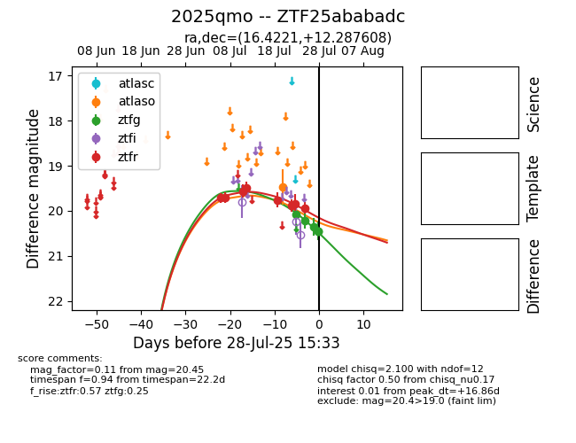

Target 2025qmo at 2025-07-28 15:33, see:
FINK: fink-portal.org/2025qmo
Lasair: lasair-ztf.lsst.ac.uk/objects/2025qmo
ALeRCE: alerce.online/object/2025qmo
TNS: wis-tns.org/object/2025qmo
YSE: ziggy.ucolick.org/yse/transient_detail/2025qmo
alt names
ZTF25ababadc (ztf,fink)
2025qmo (tns,yse)
coordinates:
equatorial (ra, dec) = (16.4221,+12.28761)
galactic (l, b) = (128.4015,-50.43274)
photometry
last atlaso=19.47, ztfg=20.45, ztfr=19.94
1 atlaso, 5 ztfg, 8 ztfr detections
